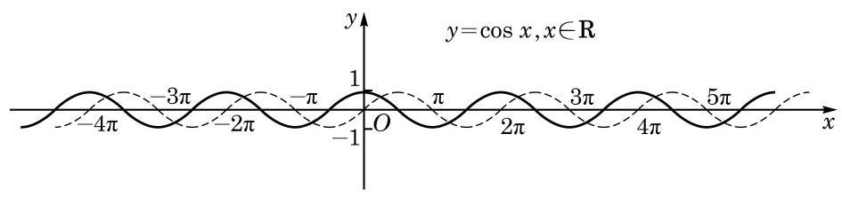
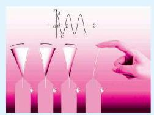

1 余弦函数的图像
怎样作余弦函数 的图像呢?
当然,我们可以像对正弦函数 一样,把任意角 的余弦值 用角的终边与单位圆的交点的横坐标表示,用描点法作出余弦函数的图像.

图 7-2-1
观察余弦函数的图像, 并对比正弦曲线, 可知余弦曲线在区间 上的五个关键点的坐标是 、

如图, 拨动弹簧片后，弹簧片端点离开平衡位置的位移 随时间 呈余弦曲线的变化规律.
.
2 余弦函数的性质
利用余弦函数 与正弦函数 的关系 ,由正弦函数的性质就容易推出余弦函数的性质:
(1)余弦函数 是周期函数， 均是它的周期,而 是它的最小正周期.
(2)余弦函数 的值域是 .
当且仅当 时, 取得最大值 1 ; 而当且仅当 时, 取得最小值 -1 .
(3)余弦函数 是偶函数，其图像关于 轴对称.
(4)余弦函数 在区间 上是严格增函数，而在区间 上是严格减函数.
例题 1
例 1 求下列函数的最大值与最小值, 并求出取得最大值和最小值时所有 的值:
(1) ;
(2) .
答案与解析收起 / 展开
解 (1) 令 ,则
当 时,有 ,从而 , 于是 .
这样, 的最大值是 6,此时 ,即
而 的最小值是 -2,此时 ,即
(2)令 ，则
由 ,有 ,即 .
由余弦函数的性质可知, 在区间 上是严格增函数,而在 上是严格减函数.
又因为
所以 的最大值是 1,此时 ,即 ,从而 的最小值是 ,此时 ,即 ,从而 .
例题 2
答案与解析收起 / 展开
解 因为
而 的最小正周期是 ,所以函数 的最小正周期是 .
由余弦函数的单调性可知,当 ,即 时,函数 是严格增函数,即此函数的单调增区间是
练习 7.2
练习7.2 · 1
- 已知函数 (其中常数 ) 的最小正周期为 ，求 的值.
答案与解析收起 / 展开
练习7.2 · 2
- 判断下列函数的奇偶性, 并说明理由:
(1) ；
(2) ；
(3) .
答案与解析收起 / 展开
2.(1)奇函数. (2)奇函数. (3)既不是奇函数也不是偶函数.
练习7.2 · 3
答案与解析收起 / 展开
- 函数 的最小正周期为 ,单调增区间为 ,单调减区间为 .
习题 7.2
A 组
习题7.2A · 1
答案与解析收起 / 展开
习题7.2A · 2
答案与解析收起 / 展开
习题7.2A · 3
- 求下列函数的最大值和最小值,并指出使其取得最大值和最小值时 的集合:
(1) ； (2) .
答案与解析收起 / 展开
- (1) 的最大值为 3,此时相应 值的集合为 ； 最小值为 ,此时相应 值的集合为 .
(2)因为 ,且 ,所以此函数的最大值为 1,此时相应 值的集合为 ；最小值为 ,此时相应 值的集合为 .
习题7.2A · 4
- 判断下列函数的奇偶性, 并说明理由:
(1) (2) ；
(3) .
答案与解析收起 / 展开
4.(1)偶函数. (2)既不是奇函数也不是偶函数.
习题7.2A · 5
答案与解析收起 / 展开
- 函数 的单调增区间是 和 ; 单调减区间是 . 当 时,此函数取得最大值 1 ; 当 时,此函数取得最小值 -1 . 因此, 此函数的值域是 .
B 组
习题7.2B · 1
- 函数 是 ( )
A. 最小正周期为 的奇函数; B. 最小正周期为 的偶函数;
C. 最小正周期为 的奇函数; D. 最小正周期为 的偶函数.
答案与解析收起 / 展开
习题7.2B · 2
答案与解析收起 / 展开
习题7.2B · 3
- 已知 和 的图像的连续三个交点 构成 ,求 的面积.
答案与解析收起 / 展开
- 在同一平面直角坐标系中画出 和 的图像,可以看出 总是以 为底边、高为 的等腰三角形,因此 的面积为 .